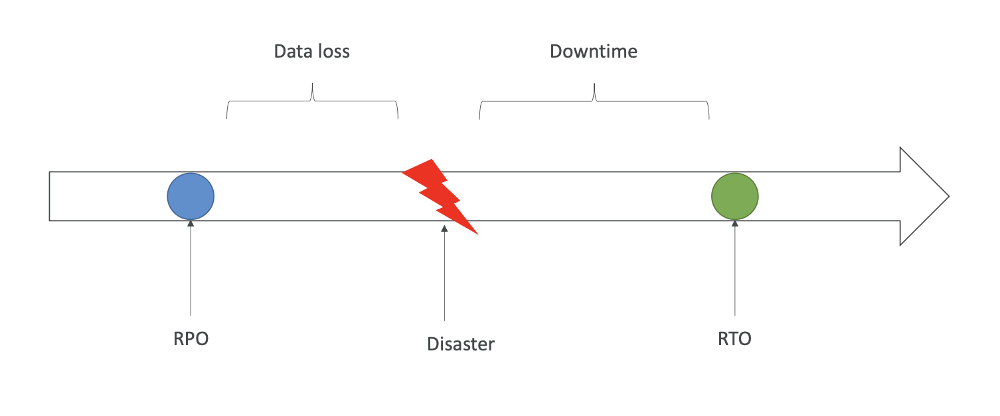
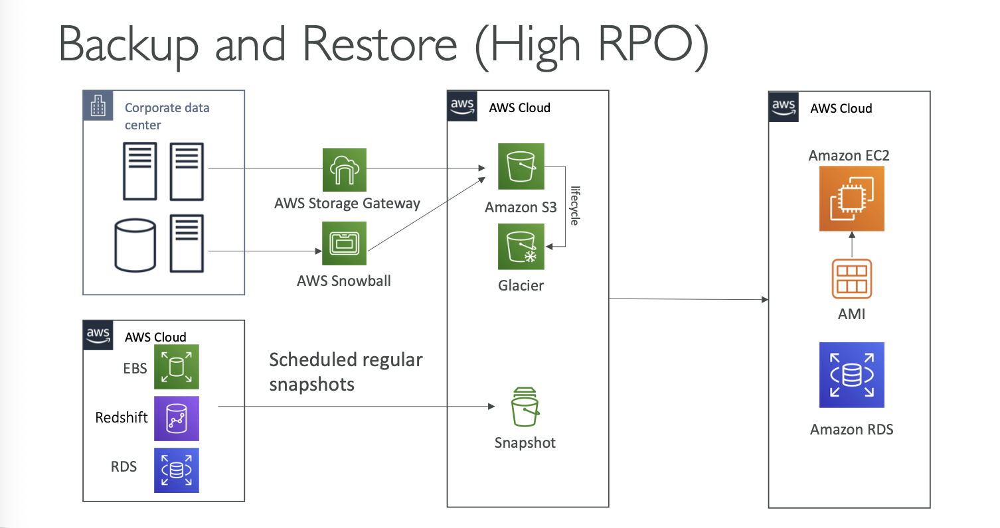
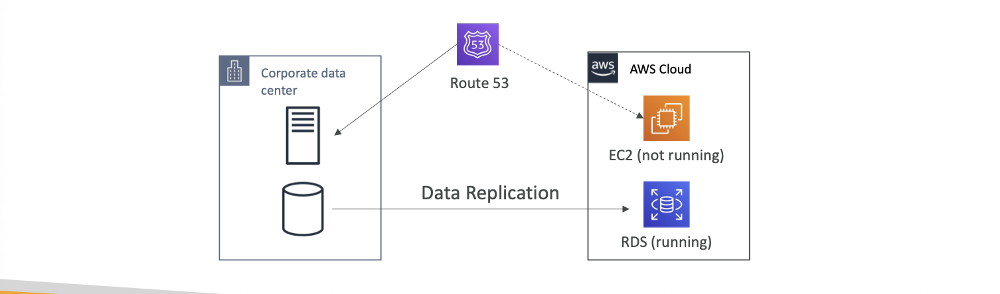
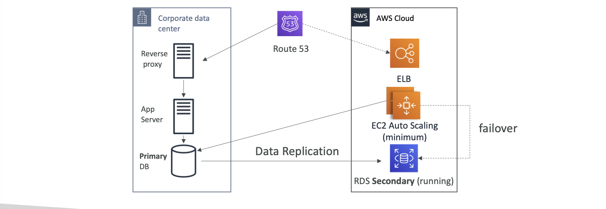
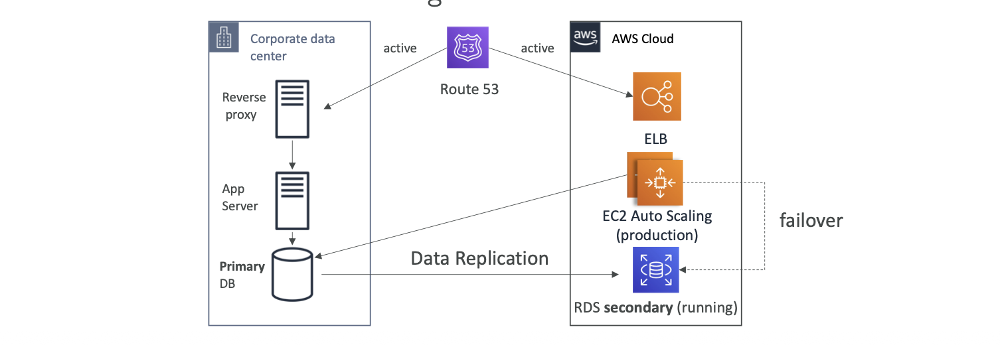
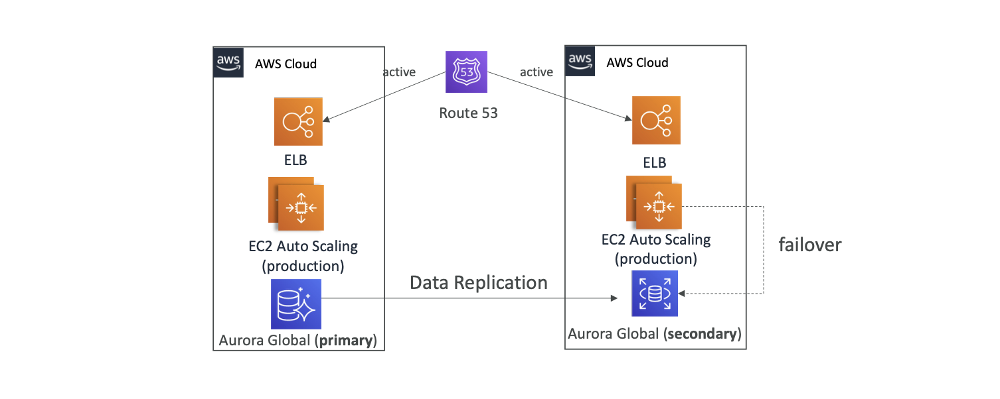

Disaster Recovery and Migrations¶
Disaster Recovery in AWS¶
- Disaster in AWS is any event that has negative impact on a company's business continuity or finances
- Disaster Recovery (DR) is the process, policies and procedures related to preparing for recovery or continuation of technology infrastructure critical to an organization after a natural or human-induced disaster
- Kind of disasters:
- On-premises => On-premises
- On-premises => AWS Cloud
- AWS Cloud Region A => AWS Cloud Region B
- Important concepts:
- RPO: Recovery Point Objective
- RTO: Recovery Time Objective

- DR strategies in AWS can be broadly classified into 4 categories:
- Backup and Restore
- Pilot Light
- Warm Standby
- Multi-Site Active-Active or Hot Site
Backup and Restore¶
- Data is backed up and stored in AWS
- In the event of a disaster, data is restored from AWS to on-premises or to AWS Cloud
- Lowest cost option, but longest recovery time
- Suitable for non-critical applications with high RPO and RTO

Pilot Light¶
- A minimal version of the environment is always running in AWS
- Critical core components are always running, while other components are scaled up when needed
- Faster recovery time than Backup and Restore
- Suitable for critical applications with moderate RPO and RTO

Warm Standby¶
- A scaled-down version of a fully functional environment is always running in AWS
- The environment can be quickly scaled up to handle production traffic in the event of a disaster
- Faster recovery time than Pilot Light
- Suitable for business-critical applications with low RPO and RTO

Multi-Site Active-Active or Hot Site¶
- A fully functional environment is always running in AWS
- Traffic is distributed between on-premises and AWS environments
- Immediate recovery time in the event of a disaster
- Suitable for mission-critical applications with very low RPO and RTO

All AWS Multi Region¶

Disaster recovery Tips¶
- Backup
- EBS Snapshots, RDS automated backups or Snapshots, etc
- Regular pushes to S3, S3 IA, Glacier, Lifecycle Policy, Cross region Replication
- From On-Premises snowball or Storage Gateway
- High availability
- Use Route 53 to migrate DNS over from Region to Region
- RDS Multi-AZ, ElastiCache Multi-AZ, EFS, S3
- Site to Site VPN as a recovery from Direct Connect
- Replication
- RDS Replication (Cross Region), AWS Aurora + Global Databases
- Database replication from on-premises to RDS
- Storage Gateway
- Automation
- CloudFormation / Elastic Beanstalk to re-create a whole new environment
- Recover / Reboot EC2 instances with CloudWatch if alarms fail
- AWS Lambda functions for cutomized automations
- Chaos
- Netflix has a "simian-army" randomly terminating EC2
Elastic Disaster Recovery¶
- Quickly and easily recover your physical, virtual, and cloud-based servers into AWS
- Continuous block-level replication for your servers
- Corporate Data Center -> Staging -> Production
Database Migration Service¶
- Quickly and securely migrate databases to AWS, resilient, self healing
- The source database remains available during the migration
- Supports:
- Homogeneous migrations
- Heterogeneous migrations
- Continuous Data Replication using CDC
-
You must create an EC2 instance to perform the replication tasks
-
Sources:
- Databases
- Azure
- Amazon RDS
- Amazon S3
- DocumentDB
-
Targets:
- Databases
- Amazon RDS
- Redshift, DynamoDB, S3
- OpenSearch Service
- Kinesis Data Streams
- Apache Kafka
- DocumentDB, Amazon Neptune
- Redis and Babelfish
-
AWS Schema Conversion Tool (SCT)
- Convert your DB Schema from one engine to another
- Example: OLTP or OLAP
- Prefer compute-intensive instances to optimize data conversions
-
In On-Premises you should install Server with AWS SCT to schema conversion
- Data Migration
- With AWS DMS - Multi-AZ Deployment
- Provides Data Redundancy
- Eliminates I/O freezes
- Minimizes latency spikes